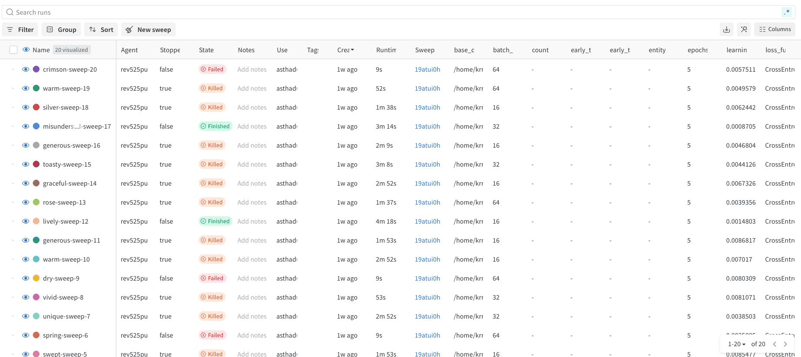
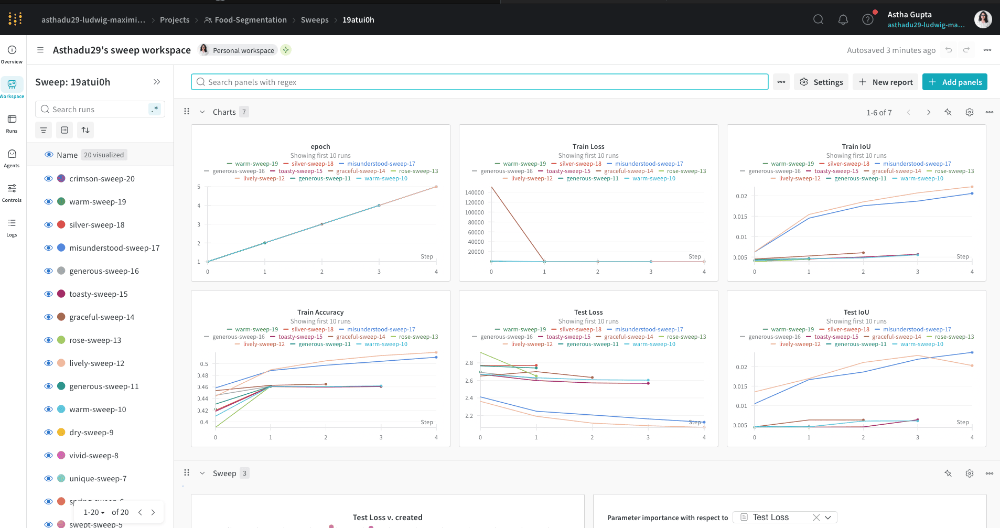
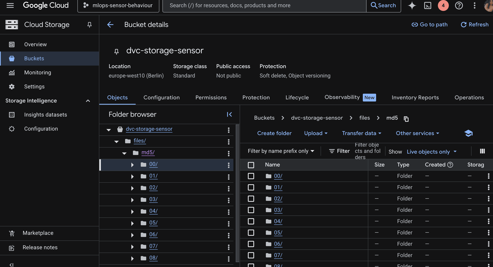
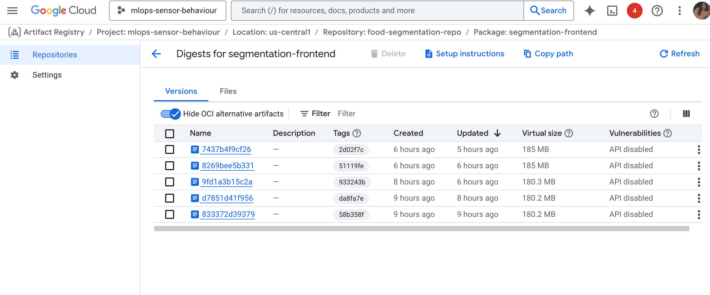
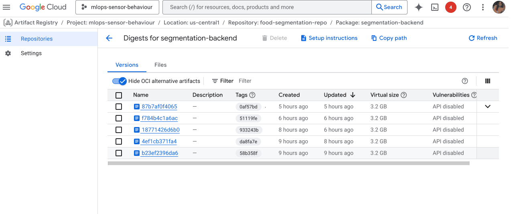
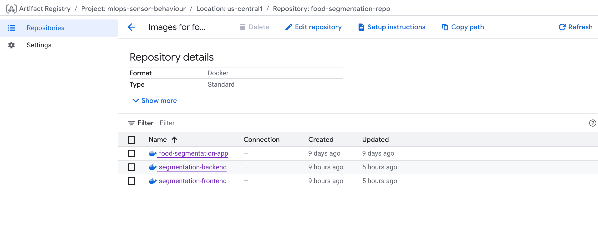
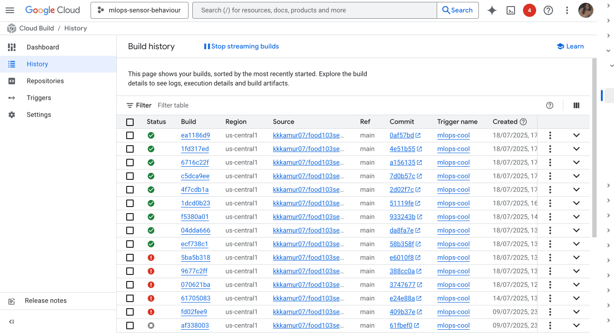

{kind=link}

we conducted a Bayesian hyperparameter sweep to find the best configuration that minimizes test loss. Among the 20 runs visualized, the run labeled lively-sweep-12 achieved the lowest test loss of 2.065 with:
Operations
This is the report template for the exam. Please only remove the text formatted as with three dashes in front and behind like:
--- question 1 fill here ---
Where you instead should add your answers. Any other changes may have unwanted consequences when your report is
auto-generated at the end of the course. For questions where you are asked to include images, start by adding the image
to the figures subfolder (please only use .png, .jpg or .jpeg) and then add the following code in your answer:

In addition to this markdown file, we also provide the report.py script that provides two utility functions:
Running:
bash
python report.py html
Will generate a .html page of your report. After the deadline for answering this template, we will auto-scrape
everything in this reports folder and then use this utility to generate a .html page that will be your serve
as your final hand-in.
Running
bash
python report.py check
Will check your answers in this template against the constraints listed for each question e.g. is your answer too short, too long, or have you included an image when asked. For both functions to work you mustn't rename anything. The script has two dependencies that can be installed with
bash
pip install typer markdown
The checklist is exhaustive which means that it includes everything that you could do on the project included in the curriculum in this course. Therefore, we do not expect at all that you have checked all boxes at the end of the project. The parenthesis at the end indicates what module the bullet point is related to. Please be honest in your answers, we will check the repositories and the code to verify your answers.
data.py file such that it downloads whatever data you need and preprocesses it (if necessary) (M6)model.py and a training procedure to train.py and get that running (M6)requirements.txt and requirements_dev.txt file with whatever dependencies that you
are using (M2+M6)pep8) while doing the project (M7)Enter the group number you signed up on
Answer:
krrish.agarwalla@campus.lmu.de
alisha.al@campus.lmu.de
astha.gupta@campus.lmu.de
akshata.lokhade@campus.lmu.de
Enter the study number for each member in the group
Answer:
Krrish Agarwalla : 12934480
Alisha : 13023958
Astha Gupta : 13021609
Akshata Lokhade : 13032143
A requirement to the project is that you include a third-party package not covered in the course. What framework did you choose to work with and did it help you complete the project?
Answer:
We used the third-party package uv to optimize our Docker image building process and speed up package installation times in our project. With uv, dependency resolution and installation became significantly faster, which improved our development workflow and reduced the time needed to rebuild Docker containers. Also with uv we are able to make our dependency resolution much faster thus making our code more reproducible.
Initially, we also planned to use the transformers package from Hugging Face to leverage pre-trained models for the image segmentation component of our project. However, after implementing and evaluating our own MiniUNET model, we found that it performed efficiently and met our requirements with lightweight computation. As a result, we did not end up integrating transformers.
Overall, using uv provided tangible benefits in streamlining our project’s infrastructure, even though our primary modeling objectives were achieved with a custom, lighter approach.
In the following section we are interested in learning more about you local development environment. This includes how you managed dependencies, the structure of your code and how you managed code quality.
Explain how you managed dependencies in your project? Explain the process a new team member would have to go through to get an exact copy of your environment.
Recommended answer length: 100-200 words
Answer:
We managed project dependencies using both uv and pip. For uv, all core dependencies are specified in the pyproject.toml file, ensuring precise and reproducible installations using uv’s fast resolver. For pip users, we maintained requirements.txt for production dependencies and requirements_dev.txt for development-specific packages. This approach provided flexibility, allowing contributors to install dependencies using either tool depending on their workflow preferences.
To set up an exact copy of the development environment, a new team member can:
Option 1: Use uv
- Clone the project repository.
- Run uv pip sync to install dependencies as specified in pyproject.toml.
Option 2: Use pip
- Clone the repository.
- Run pip install -r requirements.txt for core dependencies.
Option 3: Use Docker Compose
- Run the provided docker-compose.yml to automatically set up both the backend and frontend, with all dependencies and models pulled and configured.
Full installation steps and environment setup guidance are provided in our project Documentation. This ensures new team members can quickly replicate the exact development environment with minimal setup overhead.
We expect that you initialized your project using the cookiecutter template. Explain the overall structure of your code. What did you fill out? Did you deviate from the template in some way?
Recommended answer length: 100-200 words
Example: From the cookiecutter template we have filled out the ... , ... and ... folder. We have removed the ... folder because we did not use any ... in our project. We have added an ... folder that contains ... for running our experiments.
Answer:
We initialized our project using a custom Cookiecutter template, assembled from several open-source templates (including the course-provided one) to fit our MLOps workflow. The structure largely follows standard Cookiecutter conventions introduced in the course, but we introduced key changes for better experiment management and clarity.
Most notably, we added a saved/ directory to store important model outputs—such as weights, logs, and visualizations—which makes tracking experiments and results straightforward. In the src/ folder, we created an app/ subfolder to house API (service.py) and frontend (frontend.py) code, keeping them separate from core modeling and training logic (segmentation/) and from tests.
Other files include DVC and cloud build configs, Dockerfiles for both the backend and frontend, automation scripts, and well-organized configuration in configs/. CI/CD pipelines and pre-commit checks are set up via GitHub Actions.
These modifications make the project easier to manage, modular, and collaborative. Our customized template is available at [https://github.com/kkkamur07/cookie-cutter/tree/main/mlops/].
Did you implement any rules for code quality and format? What about typing and documentation? Additionally, explain with your own words why these concepts matters in larger projects.
Recommended answer length: 100-200 words.
Answer:
We implemented pre-commit hooks and used ruff for linting to ensure our code followed consistent style and quality guidelines. At first, adapting to these rules was a challenge, but we realized that maintaining formatting and linting standards helps keep our codebase organized and easier to read as the project grows. We also used type hints in our Python code, which made the functions and modules clearer to understand and enabled type checking tools to catch mistakes early. For documentation, we made sure to write docstrings for key functions and modules, helping both current and future team members understand the code’s purpose and usage.
In the following section we are interested in how version control was used in your project during development to corporate and increase the quality of your code.
How many tests did you implement and what are they testing in your code?
Recommended answer length: 50-100 words.
Example: In total we have implemented X tests. Primarily we are testing ... and ... as these the most critical parts of our application but also ... .
Answer: In total, we have implemented 12 tests. We are primarily testing three critical aspects of the application:
Data Pipeline: Ensuring correct loading and batching of data.
Model Architecture: Verifying the neural network's structure, initialization, and forward pass output.
Training Process: Confirming the end-to-end training loop's execution, logging with Weights & Biases, model saving, and visualization of metrics and predictions.
These tests collectively ensure the robustness and correctness of our machine learning pipeline's core components. --- question 7 fill here ---
What is the total code coverage (in percentage) of your code? If your code had a code coverage of 100% (or close to), would you still trust it to be error free? Explain you reasoning.
Recommended answer length: 100-200 words.
Example: The total code coverage of code is X%, which includes all our source code. We are far from 100% coverage of our ** code and even if we were then...*
Answer:
The overall code coverage of our project is around 61%.Below is the code coverage breakdown for each module: (foodenv) krrish@LMMISTA-gpu1:~/home/desktop/sarengeyo/food103seg-calories$ coverage report Name Stmts Miss Cover
src/segmentation/init.py 0 0 100% src/segmentation/data.py 38 0 100% src/segmentation/main.py 50 30 40% src/segmentation/model.py 36 0 100% src/segmentation/train.py 255 115 55%
TOTAL 379 145 61%
Even if the code coverage were 100%, we still cannot ensure that the code is free from logical or mathematical errors.Code coverage reflects the percentage of code run by tests but does not guarantee that the implementation is correct or that all edge cases are handled properly. Bugs may still exist due to incorrect logic, faulty assumptions, or unexpected data inputs.
To improve the reliability of our code beyond, we have implemented assert statements throughout our test cases. These assertions help us verify the shape and size of tensors.
Did you workflow include using branches and pull requests? If yes, explain how. If not, explain how branches and pull request can help improve version control.
Recommended answer length: 100-200 words.
Example: We made use of both branches and PRs in our project. In our group, each member had an branch that they worked on in addition to the main branch. To merge code we ...
Answer:
We used Git extensively throughout our workflow. Each team member worked on their own feature/teammate_branch, which allowed everyone to develop and test new features separately without affecting the main codebase. Even small changes were committed regularly to these individual branches. When ready, we would create a pull request (PR) and all team members would review the proposed changes. Only after everyone had reviewed, discussed, and understood the updates was the PR merged into the main branch. Whenever someone started working, they made sure to first pull the latest changes from the main branch to stay up to date and avoid unnecessary merge conflicts. While we occasionally ran into fatal errors, using branches and PRs significantly helped us maintain code quality, shared understanding, and allowed us to easily manage version control as a team.
Did you use DVC for managing data in your project? If yes, then how did it improve your project to have version control of your data. If no, explain a case where it would be beneficial to have version control of your data.
Recommended answer length: 100-200 words.
Example: We did make use of DVC in the following way: ... . In the end it helped us in ... for controlling ... part of our pipeline
Answer:
We leveraged DVC (Data Version Control) extensively to manage both our datasets and model weights throughout the project. DVC streamlined collaboration by enabling team members to easily share and stay synchronized on large datasets and data preprocessing steps—any updates, such as converting images to tensors, could be versioned and seamlessly pulled by others. We also used DVC to track evolving model weights, which helped us manage different checkpoints and ensure full reproducibility independently of external experiment tracking platforms.
While DVC can be integrated with GitHub workflows to automate retraining when data changes, this level of automation wasn’t essential for our current use case. Instead, our CI/CD setup focused on automatic Docker deployments that included the latest updated models. Our entire approach and lessons learned with DVC are thoroughly documented in our project documentation.
Discuss you continuous integration setup. What kind of continuous integration are you running (unittesting, linting, etc.)? Do you test multiple operating systems, Python version etc. Do you make use of caching? Feel free to insert a link to one of your GitHub actions workflow.
Recommended answer length: 200-300 words.
Answer:
Our project uses continuous integration (CI) setup built around GitHub Actions, & Cloud Build for automated code quality checks, testing, and deployment. The main workflow—ci.yml—runs unit tests with pytest and uses ruff for linting to maintain style consistency and catch errors early. We test across multiple operating systems (Ubuntu, macOS) and Python versions to ensure cross-platform compatibility.
To speed up builds, we cache Python dependencies using pip. DVC is integrated with CI: whenever data or model files tracked by DVC (data.dvc, models.dvc) are updated, the workflow can detect these changes and trigger rebuilds or redeployments, we didn't find the workflow around tracking data changes here to be relevant because in our case data was not changing.
Additionally, we use cloudbuild.yaml for automated Docker deployments. Whenever there are changes to the data or a push to the main branch, Google Cloud Build builds new Docker images for our app ( which takes quite sometime to build on local ), which can be deployed to Cloud Run seamlessly
This CI/CD pipeline ensures our code is consistently tested, styled, and deployable across platforms, making the development process faster.
In the following section we are interested in learning more about the experimental setup for running your code and especially the reproducibility of your experiments.
How did you configure experiments? Did you make use of config files? Explain with coding examples of how you would run a experiment.
Recommended answer length: 50-100 words.
Example: We used a simple argparser, that worked in the following way: Python my_script.py --lr 1e-3 --batch_size 25
Answer:
We used Hydra for configuration management in our experiments. All key settings—including hyperparameters, WandB sweep parameters, and profiling options—are defined in a central config.yaml file. This makes it easy to manage and modify configurations without changing the main training or model code, promoting a clean, modular, and reproducible setup.
If we need to override any parameter for a specific run, we can do so directly from the command line using Hydra’s syntax. For instance:
bash
python src/segmentation/main.py model.hyperparameters.lr=0.005 profiling.enabled=true
Reproducibility of experiments are important. Related to the last question, how did you secure that no information is lost when running experiments and that your experiments are reproducible?
Recommended answer length: 100-200 words.
Example: We made use of config files. Whenever an experiment is run the following happens: ... . To reproduce an experiment one would have to do ...
Answer:
We have implemented Weights & Biases (WandB) to log all experiment hyperparameters such as the number of epochs, learning rate, and batch size. This ensures that configurations are consistently tracked and easily reproducible across runs. Using WandB also enables team members to access experiment details and reproduce results on their own machines. While we considered making the learning rate scheduler a tunable hyperparameter, we chose not to, in order to keep the model simple and focused.
For local development and debugging, we used loguru to log all important parameters and runtime information—such as model hyperparameters, training progress, loss, accuracy, and runtime warnings or errors. These logs are stored in the saved/logs/ directory for each specific run, allowing us to trace back any configuration or issue later.
To further ensure robust reproducibility, we explicitly set and fixed the random seed in all key modules (NumPy, PyTorch, and Python random) so that results remain consistent across different runs and environments. This combination of local and remote logging, along with controlled randomness, helps ensure that our experiments are traceable, reproducible, and collaborative.
Upload 1 to 3 screenshots that show the experiments that you have done in W&B (or another experiment tracking service of your choice). This may include loss graphs, logged images, hyperparameter sweeps etc. You can take inspiration from this figure. Explain what metrics you are tracking and why they are important.
Recommended answer length: 200-300 words + 1 to 3 screenshots.
Example: As seen in the first image when have tracked ... and ... which both inform us about ... in our experiments. As seen in the second image we are also tracking ... and ...
Answer:
we conducted a Bayesian hyperparameter sweep to find the best configuration that minimizes test loss. Among the 20 runs visualized, the run labeled lively-sweep-12 achieved the lowest test loss of 2.065 with:
batch_size = 16 epochs = 5 learning rate = 0.00148 Another interesting thing which we feel was the parameter importance chart that reveals that the learning rate had the strongest correlation with test loss, followed by batch size and runtime. This insight is critical for prioritizing which hyperparameters to tune in future iterations.


In the second and third figures, multiple WandB runs are shown, comprising both manual runs (with individually set hyperparameters) and automated sweeps using Bayesian optimization. Initially, beforewe tuned hyperparameters like learning_rate and batch_size manually, resulting in inconsistent experimentation. We later adopted WandB Sweeps for systematic and reproducible exploration of the search space.

in the above image we have used two types of accuracy one specific to image segmentation(iou) and accuracy which comapraes the normal accuracy of the pixels.
Docker is an important tool for creating containerized applications. Explain how you used docker in your experiments/project? Include how you would run your docker images and include a link to one of your docker files.
Recommended answer length: 100-200 words.
Example: For our project we developed several images: one for training, inference and deployment. For example to run the training docker image:
docker run trainer:latest lr=1e-3 batch_size=64. Link to docker file:Answer:
We used Docker extensively to containerize our project's frontend, backend, and, in the initial phases, the training environment. This enabled us to work on the backend and frontend independently, fixing issues in one without affecting the other. Another practical reason for this separation was that cloud deployment options restricts exposing multiple ports, so having distinct, self-contained containers for each service made deployment more flexible.
To streamline running both services together in the local, we created a docker-compose file. With this setup, you can build and launch both the frontend and backend simultaneously using:
bash
docker-compose up --build
This command will build the images for both the frontend and backend based on the included Dockerfiles and start the containers, provided you’ve configured the ports correctly. Proper port mapping is essential, as incorrect configuration can cause services to fail or conflict.
For those interested in our Docker setup, you can find an example Dockerfile here: Dockerfile (backend) on GitHub
When running into bugs while trying to run your experiments, how did you perform debugging? Additionally, did you try to profile your code or do you think it is already perfect?
Recommended answer length: 100-200 words.
Example: Debugging method was dependent on group member. Some just used ... and others used ... . We did a single profiling run of our main code at some point that showed ...
Answer:

We used TensorBoard Profiler to profile our code, with a key focus on effective memory utilization of cuda(91%) in our case. As expected, most of the time was consumed by kernel operations, due to the computational cost of convolutions. To optimize further, we applied quantization and pruning, which helped reduce memory allocation, although we feel we were not able to leverage full potential of these techniques in our current model.
In terms of debugging, we didn’t face major device-related or tensor shape bugs. However, we did encounter training and logical bugs. During the initial training experiments, we kept getting an "Assertion CUDA out of memory" error. While debugging, we discovered that the issue was caused by the data itself — although the masks were supposed to contain values up to 103 (the number of classes), some of them had values greater than 104. This inconsistency in the labels was causing unexpected behavior during training. To fix the issue, we clipped all class values greater than 103 to 0, which resolved the error and allowed training to proceed smoothly.
In the following section we would like to know more about your experience when developing in the cloud.
List all the GCP services that you made use of in your project and shortly explain what each service does?
Recommended answer length: 50-200 words.
Example: We used the following two services: Engine and Bucket. Engine is used for... and Bucket is used for...
Answer:
We utilized several Google Cloud Platform (GCP) services to streamline and automate various stages of our project: • Cloud Storage Buckets: Used in combination with DVC for storing, sharing & versioning model weights & datasets. • Cloud Build Triggers: Set up to automatically initiate builds when code is pushed to our repository. This ensured we didn't have to build the large docker file on our local. • Artifact Registry: Employed to store and manage our Docker container images. This made it easy to organize and retrieve images for deployment and testing. • Cloud Run: Used for deploying and running our containerized backend and frontend services. • Monitoring and Alerts: Implemented system monitoring & service level objectives for our deployed services. We recieved real time updates about our SLOs

The backbone of GCP is the Compute engine. Explained how you made use of this service and what type of VMs you used?
Recommended answer length: 100-200 words.
Example: We used the compute engine to run our ... . We used instances with the following hardware: ... and we started the using a custom container: ...
Answer:
We used Google Compute Engine (GCE) primarily for building, hosting, and testing our application containers in the cloud. While we conducted model training locally due to GCP credit restrictions, GCE allowed us to experiment with and deploy various configurations tailored to our needs.
For our backend, we provisioned virtual machines with 8 GB of RAM and 2 CPU cores, ensuring ample resources for running inference services and handling multiple API requests efficiently. For the frontend, we used lighter VM instances with 2 GB of RAM and 1 CPU core, which was sufficient to serve the Streamlit-based interface to users without unnecessary overhead.
We relied on standard E2 machine types and adjusted resource allocations as needed for development, testing, and deployment. Docker containers were built and deployed on these VMs to maintain a consistent and reproducible environment from development to production.
Insert 1-2 images of your GCP bucket, such that we can see what data you have stored in it. You can take inspiration from this figure.
Answer:


Upload 1-2 images of your GCP artifact registry, such that we can see the different docker images that you have stored. You can take inspiration from this figure.
Answer:



Upload 1-2 images of your GCP cloud build history, so we can see the history of the images that have been build in your project. You can take inspiration from this figure.
Answer:

Did you manage to train your model in the cloud using either the Engine or Vertex AI? If yes, explain how you did it. If not, describe why.
Recommended answer length: 100-200 words.
Example: We managed to train our model in the cloud using the Engine. We did this by ... . The reason we choose the Engine was because ...
Answer:
We were not able to train our model in the cloud using either Google Compute Engine or Vertex AI due to restrictions associated with our $300 cloud credits—most notably and we did not have access to GPU resources required for effective deep learning model training on the cloud. As a result, we conducted all model training locally on a high-performance workstation equipped with an RTX 4090 GPU (24 GB VRAM) provided by our university.
Our main model was trained for approximately 20 minutes on this local setup. For hyperparameter tuning, we utilized wandb sweeps, running additional experiments on the same GPU for about an hour to optimize our results efficiently.
Did you manage to write an API for your model? If yes, explain how you did it and if you did anything special. If not, explain how you would do it.
Recommended answer length: 100-200 words.
Example: We did manage to write an API for our model. We used FastAPI to do this. We did this by ... . We also added ... to the API to make it more ...
Answer:
We successfully wrote an API for our model using both FastAPI and BentoML. The main API, built with FastAPI, serves a food segmentation model (MiniUNet) with endpoints for health checks and image segmentation. Users can upload images and receive segmented outputs. We implemented preprocessing and postprocessing steps around model inference and enabled GPU support when available in the FastAPI
We added a /metrics endpoint using a custom Prometheus registry to monitor API usage, latency, and errors. Additionally, we integrated a favicon for a more polished browser experience, and served static files where needed.
To ensure robustness, we wrote unit tests using pytest, performed load testing using Locust, and deployed the final API using docker to Google Cloud Run for scalability and ease of access.
Did you manage to deploy your API, either in locally or cloud? If not, describe why. If yes, describe how and preferably how you invoke your deployed service?
Recommended answer length: 100-200 words.
Example: For deployment we wrapped our model into application using ... . We first tried locally serving the model, which worked. Afterwards we deployed it in the cloud, using ... . To invoke the service an user would call
curl -X POST -F "file=@file.json"<weburl>Answer:
We successfully deployed our API both locally and in the cloud. For local deployment, we wrapped our model and prediction logic in a FastAPI application, serving it via a Uvicorn server. We extensively used tools like Locust for load testing and FastAPI’s /docs endpoint for real-time interaction and debugging.
For cloud deployment, we chose to build and ship our backend as a Docker image and run it using Google Cloud Run. We decided against using Cloud Functions, as we wanted to avoid the extra code re-writing. Instead, by containerizing our service.py (API logic) and model weights, we gained flexibility and reproducibility, deploying a portable container directly to the cloud. The API has a /segment endpoint which users can invoke to get segmentation of their food images.
To invoke the deployed service, users can use the following command or simply type the url mentioned below in their browser :
bash
curl https://segmentation-backend-289925381630.us-central1.run.app/status
The /status endpoint gives us the health status of the system.
You can view and test our deployed API at: https://segmentation-backend-289925381630.us-central1.run.app
Did you perform any unit testing and load testing of your API? If yes, explain how you did it and what results for the load testing did you get. If not, explain how you would do it.
Recommended answer length: 100-200 words.
Example: For unit testing we used ... and for load testing we used ... . The results of the load testing showed that ... before the service crashed.
Answer:
--- question 25 fill here ---
Did you manage to implement monitoring of your deployed model? If yes, explain how it works. If not, explain how monitoring would help the longevity of your application.
Recommended answer length: 100-200 words.
Example: We did not manage to implement monitoring. We would like to have monitoring implemented such that over time we could measure ... and ... that would inform us about this ... behaviour of our application.
Answer:
We successfully implemented monitoring for our deployed model using Prometheus. We extended our FastAPI backend (service.py) to expose a /metrics endpoint, which Prometheus can scrape to collect real-time performance metrics and service-level data. This was achieved by integrating the prometheus_client library directly into our API code.
Some of the key metrics we track include:
Total API requests: Counts every request made to our service, helping us monitor usage patterns. API errors: Logs the number of errors encountered, allowing us to catch spikes in failures or investigate specific problem cases. Latency (inference time): Measures how long the model takes to process each request. Latency is also tracked as an SLO. Input image size: Monitors the size of uploaded images, which helps in identifying unusually large requests that might need special handling or could lead to performance issues.
By collecting these metrics, we gain visibility into the health and performance of our model and API in production. For example, we can quickly spot if latency increases, error rates spike, or input trends change over time. This monitoring approach supports proactive maintenance, helps in scaling decisions, and makes it easier to ensure a reliable, responsive service as usage grows or shifts.
In the following section we would like you to think about the general structure of your project.
How many credits did you end up using during the project and what service was most expensive? In general what do you think about working in the cloud?
Recommended answer length: 100-200 words.
Example: Group member 1 used ..., Group member 2 used ..., in total ... credits was spend during development. The service costing the most was ... due to ... . Working in the cloud was ...
Answer:
During the project, we used approximately $60 worth of Google Cloud credits. The majority of these credits (about 80%) were consumed by Cloud Run, since we relied on it extensively to deploy and run our API and frontend services. Cloud Build accounted for roughly 10% of our credit usage, with the remaining 10% split between Artifact Registry and Cloud Storage buckets for storing Docker images and datasets.
We were able to save a significant amount on compute costs by running all heavy model training and hyperparameter tuning locally on an RTX 4090 GPU. If we had used Vertex AI for cloud training, our spending would have likely reached $90–100 or more due to the higher costs of GPU usage.
Overall, Working in the cloud was initially challenging as we learned to navigate the tools, but it ultimately proved invaluable for collaboration and scalability. The cloud made it much easier to share services, deploy consistently, and work together as a team.
Did you implement anything extra in your project that is not covered by other questions? Maybe you implemented a frontend for your API, use extra version control features, a drift detection service, a kubernetes cluster etc. If yes, explain what you did and why.
Recommended answer length: 0-200 words.
Example: We implemented a frontend for our API. We did this because we wanted to show the user ... . The frontend was implemented using ...
Answer:
We implemented a [Streamlit](https://github.com/kkkamur07/food103seg-calories/blob/main/src/app/frontend.py) to make our segmentation model easily accessible and interactive for users and documented the installation in document
For model and data management, we used DVC to version model checkpoints, avoiding the need for paid platforms like wandb premium. This ensured reproducibility, simplified sharing within the team, and allowed our CI pipelines on GitHub Actions to detect and react to updates to tracked model files.
Additionally, we introduced model quantization and pruning, enabling us to significantly reduce model size and improve efficiency. Our quantized models performed closely to our original versions, offering near equivalent but at a lower cost & suitable for edge deployments.
Include a figure that describes the overall architecture of your system and what services that you make use of. You can take inspiration from this figure. Additionally, in your own words, explain the overall steps in figure.
Recommended answer length: 200-400 words
Example:
The starting point of the diagram is our local setup, where we integrated ... and ... and ... into our code. Whenever we commit code and push to GitHub, it auto triggers ... and ... . From there the diagram shows ...
Answer:

Discuss the overall struggles of the project. Where did you spend most time and what did you do to overcome these challenges?
Recommended answer length: 200-400 words.
Example: The biggest challenges in the project was using ... tool to do ... . The reason for this was ...
Answer:
Krrish : The biggest struggle in our project was getting the CI/CD pipelines to work reliably. The process was much more difficult than we expected—if a single task or dependency failed in the GitHub Actions workflow, the whole pipeline would stop, leaving us to sift through logs and test different fixes. This resulted in a lot of trial and error and took up a significant amount of our time. We also had to constantly monitor how many build minutes we were using, spending around $20 of our GitHub Actions credits and always worrying about going over budget.
Another challenge was with Docker containerization—setting up and connecting the backend and frontend services, especially with cloud deployments, was not straightforward because of the GCP not exposing multiple ports. Even small mistakes in configuration could result in services not communicating properly.
To overcome these issues, we broke tasks down into smaller steps, relied heavily on documentation, and worked closely together as a team to isolate and solve problems quickly.
Alisha : One of the biggest challenges I faced during the project was deploying the API I created using BentoML. Although BentoML is designed to simplify model serving, I ran into persistent issues when trying to build the Docker container. The container consistently failed due to missing dependencies—especially PyTorch, which is essential for running the segmentation model.
I attempted several fixes: manually installing torch inside the container, adding it explicitly to bento.yaml and requirements.txt, and tweaking the Docker setup. Despite all these efforts, the container kept failing, and the model could not be served reliably through BentoML in the cloud environment.
After spending significant time troubleshooting, I decided to pivot and deploy the API using FastAPI instead. FastAPI was already implemented as part of the project, and it provided a much smoother deployment experience. I deployed the FastAPI-based service to Google Cloud Run, where it ran without any issues. The deployment was fast, dependencies were resolved correctly, and the service scaled well.
On the frontend side, the main challenge was ensuring that images (e.g., input and predicted output) were displayed side by side with consistent size and alignment. Achieving this required several iterations of layout and styling adjustments to maintain a clean and structured presentation.
Astha : One of the major challenges I faced was integrating Weights & Biases (WandB) configuration with the Hydra pipeline. While running a WandB sweep, WandB was not able to detect and override parameters from the Hydra config files. I kept running into configuration mismatches, which made setting up WandB sweeps problematic.
To overcome this, I created a script called wandb_runner.py, which acts as a wrapper to translate WandB sweep arguments into Hydra-compatible overrides. And a seperate wandb_sweep.yaml file which contains the wandb sweep configuration.
Another challenge was integrating profiling with the WandB run. Ideally, profiling should be done only for the first few batches and after implementing profiling, my WandB runner stopped after 10 batches. To fix this, I added two arguments: init_wandb (defaulted to True) and enable_profile (defaulted to False), and created a separate pipeline for profiling.
Now, when profiling is disabled, WandB runs smoothly for the entire epoch, and when profiling is enabled, it only runs for the first 10 batches.
State the individual contributions of each team member. This is required information from DTU, because we need to make sure all members contributed actively to the project. Additionally, state if/how you have used generative AI tools in your project.
Recommended answer length: 50-300 words.
Example: Student sXXXXXX was in charge of developing of setting up the initial cookie cutter project and developing of the docker containers for training our applications. Student sXXXXXX was in charge of training our models in the cloud and deploying them afterwards. All members contributed to code by... We have used ChatGPT to help debug our code. Additionally, we used GitHub Copilot to help write some of our code. Answer:
Krrish (12934480): Led CI/CD pipelines, DVC, GCP deployment, Dockerization, Cookie-Cutter templating, and documentation, while actively contributing to model development and providing project oversight.
Alisha (13023958): Designed and implemented the API using both FastAPI and BentoML, integrated unit tests for the API endpoints using pytest, and performed load testing with Locust, deployed the API to Cloud Run. Created the main README, and contributed to documentation and project structure.
Astha (13021609): Set up the complete model pipeline from design and training to implementation, including debugging, profiling, WandB setup, quantization, pruning, Hydra configuration management, and logging, while actively contributing to model deployment.
Akshata(13032143): Developed and implemented unit tests for ML model, data loading, and training modules.Designed and built the frontend using Streamlit.Prepared Machine Learning Architecture Diagram and contributed to the documentation.
We all used the Claude family of models for coding and debugging, frequently referring to Stack Overflow for various issues.
{kind=link}
{kind=link}
{kind=link}
{kind=link}